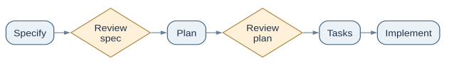

Define the change before assigning it
Start with an observable outcome: who needs what behavior, what is out of scope, and what evidence will count as done. Give the agent an interface contract, current system constraints and a rollback path. GitHub Spec Kit uses a specification, plan and tasks workflow; OpenSpec keeps proposal, specifications, design and tasks in reviewable artifacts. BMAD-METHOD offers another role-and-template workflow. EPAM’s agent development lifecycle is a useful planning lens for scoping, evaluation, deployment and monitoring, not a universal standard.
“Add export” is vague. A useful spec says: authorized users can export only their own records as CSV, within the existing rate limit; tests cover permission denial, empty data and encoding; release can be rolled back without losing records.


Use handoffs only where ownership changes
A planner, coder, tester and reviewer can be separate roles, but adding agents does not by itself improve a task. EPAM’s single-responsibility workflow offers a design example: each role has an input, output and acceptance condition. Preserve one owner for the whole change, and pass a compact artifact rather than an unstructured conversation. The reviewer should be able to reject a patch independently of the coder’s explanation.
When a change affects production, add action-specific authorization. Approval of a plan is not blanket approval of a later deployment or data export. Record the exact action and its result. Assay’s evidence-staleness research motivates checking that review evidence still covers the current artifact after dependencies change; its scripted experiments do not quantify every real project’s risk.
Test the contract, the agent path and the outcome
Begin with deterministic tests for business rules and permissions. Then evaluate agent trajectories: tool choice, arguments, plan adherence and wasted steps. DeepEval documents metrics such as task completion, step efficiency and tool or argument correctness. Judge-based metrics are useful diagnostics, but an independent acceptance test and human review should decide whether the change is releasable. EPAM’s testing-pyramid article argues for realistic integration tests alongside unit tests; treat that as a practice recommendation, not a measured law.
For repeatable release decisions, freeze representative tasks and compare the agent with a strong simple baseline on validated success, cost, latency and reviewer time. QMetry can organize test cases and results; it does not replace an agent-specific benchmark. Use the evaluation guide for the full comparison, and the tracing example to see where a failed run spent time.
Read the original sources
- GitHub Spec Kit · workflow reference · OpenSpecPrimary workflow documentation; Spec Kit is the basis of the redrawn figure.
- BMAD-METHODPrimary repository for its role-and-template workflow.
- EPAM ADLC · single-responsibility agents · testing pyramidVendor-authored practice articles; ideas are recommendations.
- DeepEval agent metrics · QMetryMetric definitions and test-management product documentation.
- Assay: evidence staleness · Anthropic evaluation guideResearch and practice guidance for evidence and task evaluation.